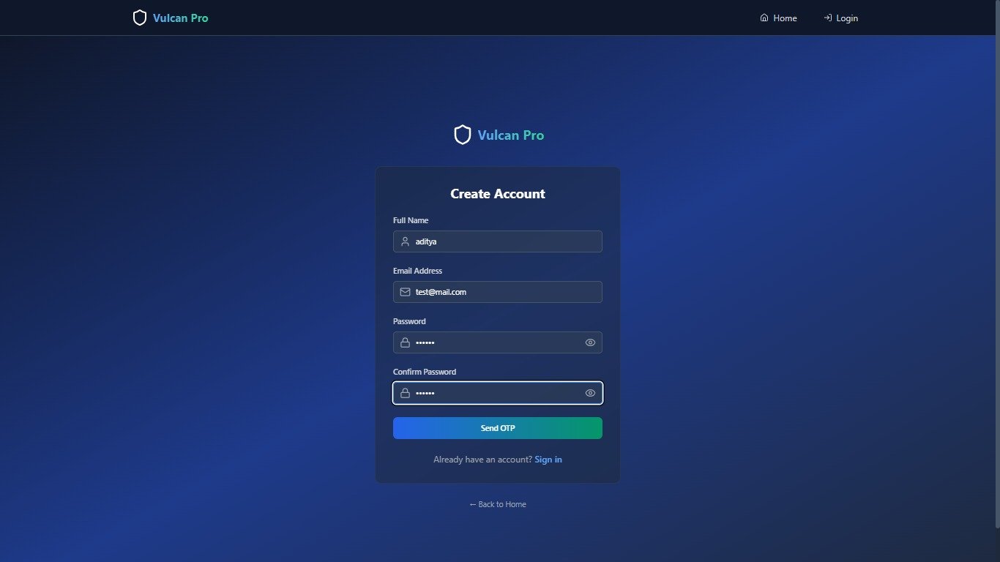
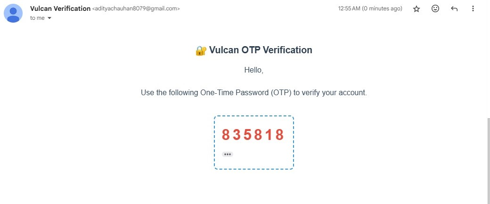
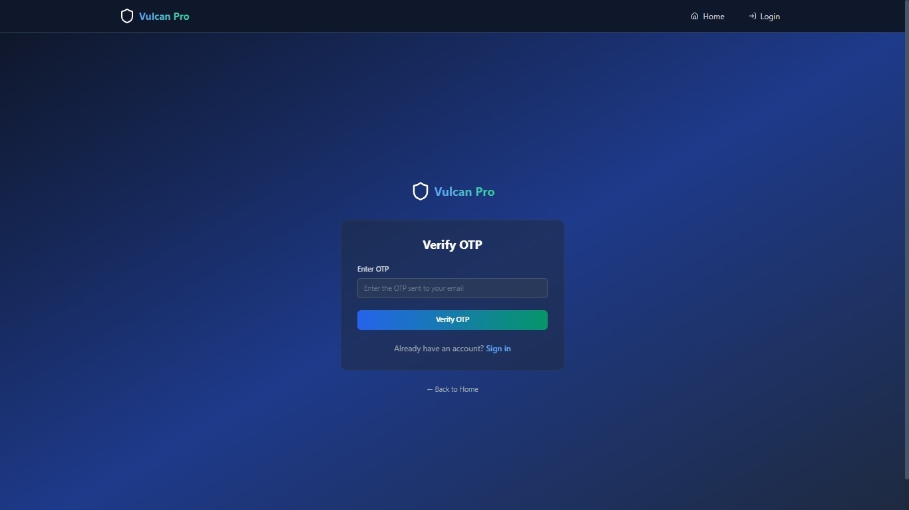
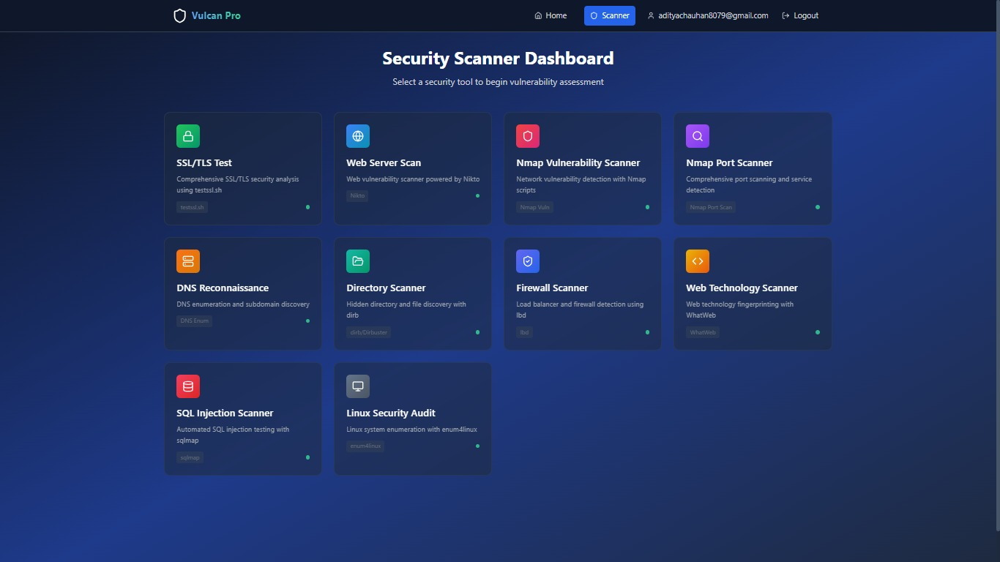
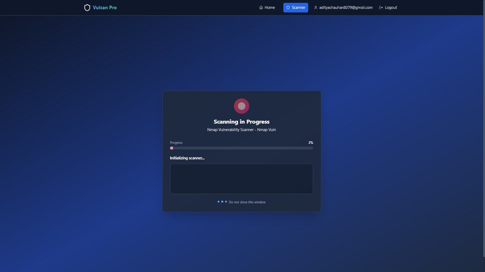
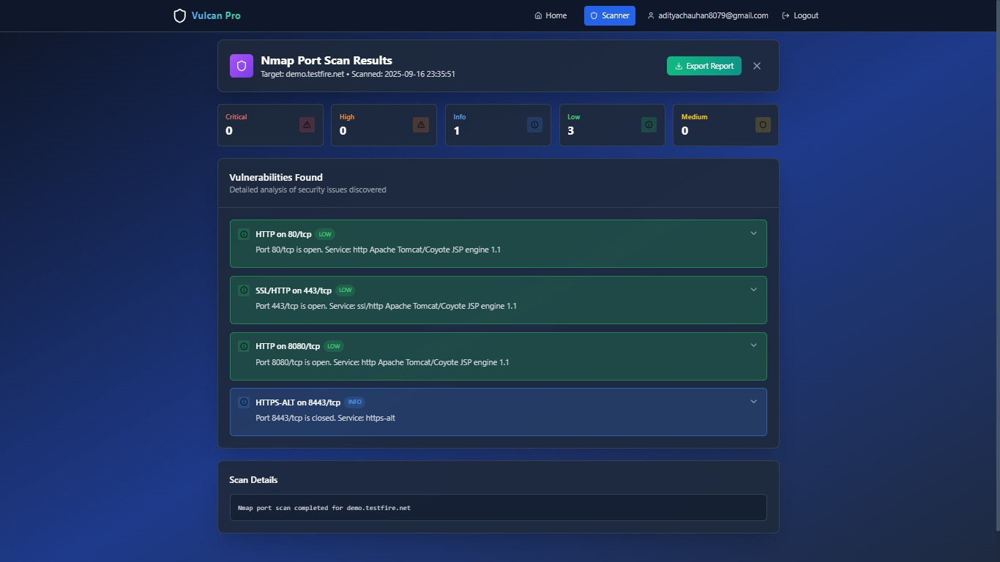
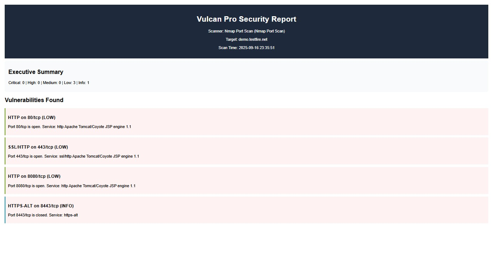

Vulcan Pro is a professional-grade web vulnerability scanner built to identify and report
security flaws with high accuracy. It automates deep scanning for threats such as SQL Injection, XSS, CSRF,
IDOR, server misconfigurations, and SSL/TLS weaknesses – providing detailed, structured results for developers
and security analysts.
The purpose of Vulcan Pro is to make security testing simple, efficient, and reliable. Whether you’re a beginner
or an expert, Vulcan Pro helps you discover hidden vulnerabilities, improve your application security, and
ensure compliance with modern standards.
You can explore the live homepage and experience its features directly from the portfolio link.
Vulcan Pro is designed to make security testing easier, faster,
and more professional. Instead of juggling multiple tools like
Nmap, Nikto, WhatWeb, SQLmap and more, you get them all in
one platform. With live scan progress, structured results, and
exportable PDF reports — Vulcan Pro streamlines vulnerability
scanning from start to finish.

Secure Access: Users start by signing in, ensuring
only authorized testers can run scans. The clean interface makes it
easy to get started quickly.

Email Integration: Vulcan Pro supports email-based
authentication with OTP for safe and secure account validation.

Two-Factor Security: OTP verification ensures an
additional layer of protection before entering the dashboard.

Powerful Dashboard: The homepage displays all
scanning modules like SSL Test, Nikto, Nmap, SQLmap, DNS Enum
and more. Just click, enter a target, and launch a scan.

Live Progress: Watch scans run in real time. Vulcan
Pro streams tool output directly into the UI, keeping you informed
at every step.

Structured Findings: Results are neatly parsed into
cards with severity levels, evidence, and clear descriptions — no
need to dig through raw console logs.

Professional Reports: Export scan results as a
polished PDF report. Each report includes an executive summary,
detailed findings, and remediation advice.
Detailed Video
Technologies & Tools Used
Vulcan Pro is built using a powerful tech stack combining frontend frameworks, backend
scripting, databases, and well-known security tools. Each technology plays a role in
making the scanner fast, reliable, and secure.